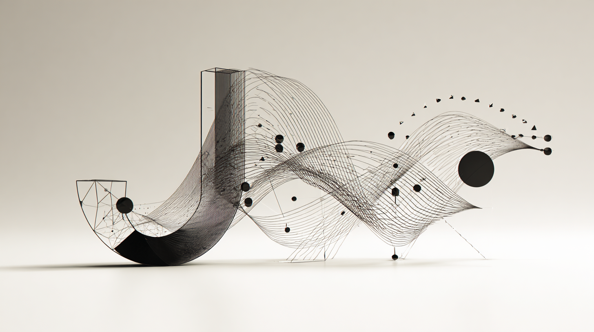

기초소양으로
완성하는 COVA
과정 중심의 사고
개념을 언어화하는 능력
비교와 연결을 통한 탐구
코코의 핵심 교육철학을 바탕으로
중등, 고1/2 미대입시 기초소양 학습 루프를 제공합니다.
PHILOSOPHY
Programs
학생들의 사고력 향상 '기초소양'을 위한 전문 교육 프로그램입니다.
단계별 맞춤 커리큘럼과 과정 중심의 성장을 지원합니다.

KICK-OFF
주차별 창의적 질문으로 자아와 환경 탐구의 시작점

GRADE-JUNIOR
[중등] 미술의 첫 흔적을 즐겁게 남기며,
탐구·기록·표현의 습관을 자연스럽게 시작하는 과정
_1757918330190.png)
GRADE-1
[고1] 비주얼 저널, 입체적 비교, 언어화 훈련을 통해
탐구에서 완성으로 나아가는 단계

GRADE-2
[고2] 사고와 실기의 균형을 유지하며, 보완과 실전 경험을 통해
탐구를 완성으로 확장 전환 단계
About COVA
COVA, 흔적이 성과가 되는 교육, "탐구의 흔적, 기록의 힘, 설명의 성장."
코코는 기술력 향상을 목표로 학생을 만들려 하지 않습니다.
대신 스스로 질문을 던지고, 작은 시도를 흔적으로 남기고, 그 과정을 자기 언어로 설명할 수 있는 학생을 기릅니다.
결국 대학, 사회가 묻는 것은 '너는 어떻게 탐구했고, 왜 그렇게 선택했는가?' 입니다.
그 답은 완성작 속에 있지 않습니다.
과정의 기록과 설명 속에 있습니다.
METRICS·REPORTS
공통 KPI
고2 추가 KPI
학부모 보고 패키지 샘플
[월간 리포트 요약]
- Before/After 2컷
- 성과 3줄
- Kick-Off 포트폴리오 하이라이트 2장
- 다음달 브리지 포인트